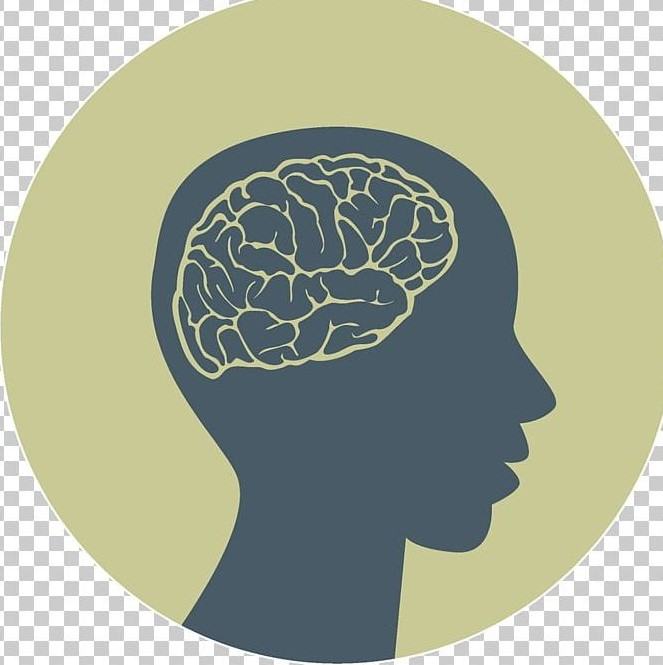

ANNEDA
La salud mental es un aspecto fundamental del bienestar general, especialmente en la etapa estudiantil, donde los jóvenes enfrentan diversas presiones y desafíos. Somos estudiantes de 11º grado comprometidos a abordar este tema vital, creando un espacio donde podamos aprender, compartir y reflexionar sobre la salud mental en el contexto escolar.
En nuestra página, exploraramos en profundidad los síntomas que pueden indicar problemas de salud mental, desde la ansiedad y la depresión hasta el estrés y la soledad. Identificar estos signos es crucial para que los estudiantes puedan buscar la ayuda necesaria y encontrar el apoyo que merecen.
Además, analizamos las causas que contribuyen a estos problemas, incluyendo factores académicos, sociales y familiares. Es importante comprender que la salud mental no es solo un desafío individual; está influenciada por el entorno en el que vivimos y las experiencias que enfrentamos.
A lo largo de esta página, también incluimos recursos útiles y consejos prácticos que pueden marcar la diferencia en la vida de un estudiante. Nuestro objetivo es fomentar una cultura de aceptación y comprensión, donde cada persona se sienta valorada y apoyada.
Gracias por visitar nuestra página y por interesarte en este tema tan relevante.